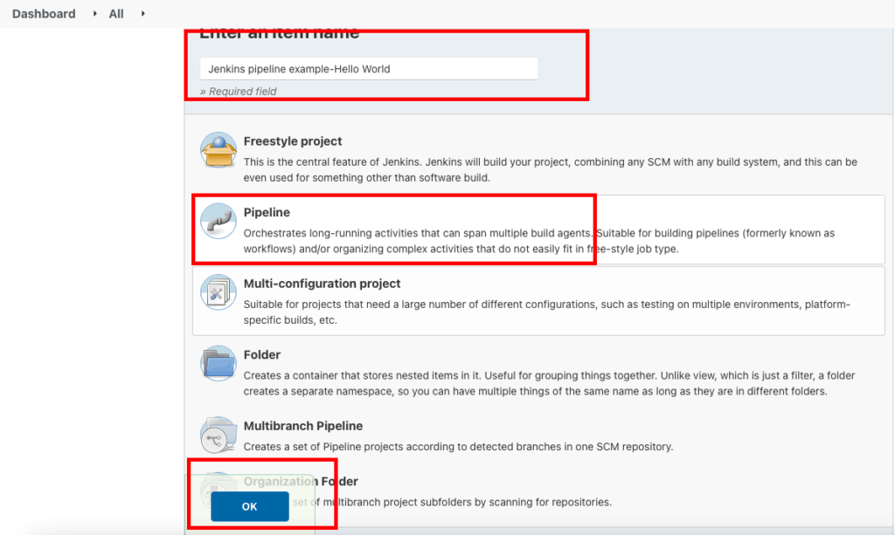
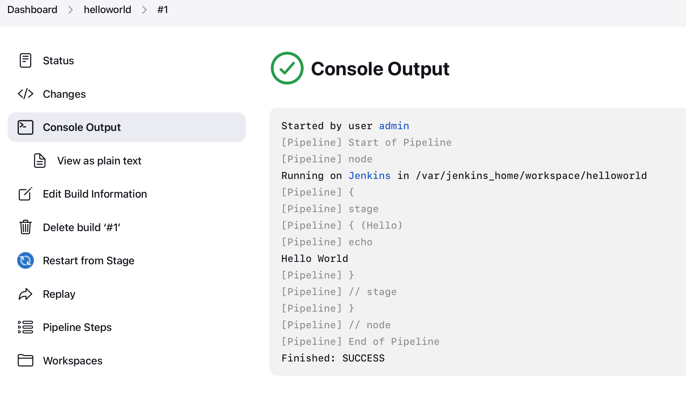
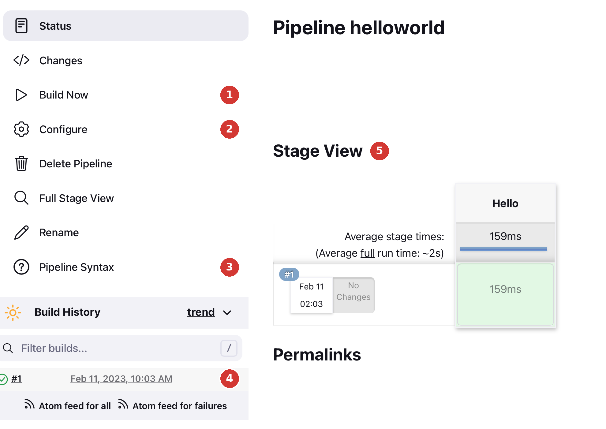

Lab 2 · Your First Pipeline
1. Hello World Pipeline
We write a "Hello World" pipeline using the declarative pipeline syntax.
Step 1: Create the job
- On the Jenkins dashboard, click New Item.
- Enter a name for the job:
hello-world - Select Pipeline, then click OK.

Step 2: Write the pipeline
The configuration page opens. Scroll down to the Pipeline section (or click Pipeline in the left menu). Check that Definition is set to Pipeline script, then paste this code into the Script box:
Your first declarative pipeline
pipeline {
agent any
stages {
stage('Hello') {
steps {
echo 'Hello World'
}
}
}
}Step 3: Save and run
- Click Save. You arrive on the job page.
- Click Build Now in the left menu.
- A new line #1 appears in Build History (bottom left). A green tick means the build succeeded.
Step 4: Read the logs
Click #1, then Console Output. You see everything Jenkins did:

The pipeline ran and printed Hello World. The last line, Finished: SUCCESS, is the final result of the build.
Step 5: See the stages
Go back to the job page (click hello-world in the breadcrumbs at the top). Jenkins shows the stages of each build, with their duration: here, a single stage called Hello.
